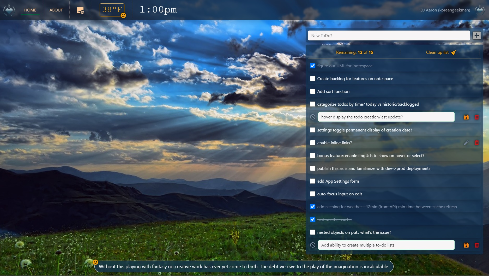

<div id="ajax-page" class="ajax-page-content">
    <div class="ajax-page-wrapper">
        <div class="ajax-page-nav">
            <div class="nav-item ajax-page-prev-next">
                <a class="ajax-page-load" href="portfolio-keepr.html"><i class="lnr lnr-chevron-left"></i></a>
                <a class="ajax-page-load" href="portfolio-rootedflow.html"><i class="lnr lnr-chevron-right"></i></a>
            </div>
            <div class="nav-item ajax-page-close-button">
                <a id="ajax-page-close-button" href="#"><i class="lnr lnr-cross"></i></a>
            </div>
        </div>

        <div class="ajax-page-title">
            <h1>Inspire</h1>
        </div>

        <div class="row">
            <div class="col-12 col-md-8 portfolio-block">
                <div class="owl-carousel portfolio-page-carousel">
                    <div class="item">
                        
                    </div>
                    <div class="item">
                        
                    </div>
                    <div class="item">
                        
                    </div>
                    <div class="item">
                        
                    </div>
                    <div class="item">
                        
                    </div>
                    <div class="item">
                        
                    </div>
                    <div class="item">
                        
                    </div>
                </div>


                <script type="text/javascript">
                    jQuery(document).ready(function ($) {
                        $('.portfolio-page-carousel').imagesLoaded(function () {
                            $('.portfolio-page-carousel').owlCarousel({
                                smartSpeed: 1200,
                                items: 1,
                                loop: true,
                                dots: true,
                                nav: true,
                                navText: false,
                                margin: 10,
                                autoHeight: true
                            });
                        });
                    });
                </script>
            </div>

            <div class="col-12 col-md-4 portfolio-block">
                <!-- Project Description -->
                <div class="project-description">
                    <div class="block-title">
                        <h3>Description</h3>
                    </div>
                    <ul class="project-general-info">
                        <li>
                            <p><i class="fa fa-user"></i> DJ Aaron</p>
                        </li>
                        <li>
                            <p><i class="fa fa-globe"></i>
                                <a href="https://inspire.koreangeekman.dev/"
                                    target="_blank">inspire.koreangeekman.dev</a>
                            </p>
                        </li>
                        <!-- <li>
                            <p><i class="fa fa-calendar"></i> 25 december, 2016</p>
                        </li> -->
                    </ul>

                    <p class="text-justify">Inspire is a full-stack To-Do management web app with
                        random background images and inspirational quotes that you can refresh on demand.
                        You can add, edit and remove tasks, mark complete and remove in bulk,
                        or hide completed tasks.</p>
                    <!-- /Project Description -->

                    <!-- Technology -->
                    <div class="tags-block">
                        <div class="block-title">
                            <h3>Technology</h3>
                        </div>
                        <ul class="tags">
                            <li><a>HTML5</a></li>
                            <li><a>CSS3</a></li>
                            <li><a>Vue.js</a></li>
                            <li><a>Bootstrap 5.3</a></li>
                            <li><a>.NET 8 w/ C#</a></li>
                            <li><a>Dapper</a></li>
                            <li><a>MySQL</a></li>
                            <li><a>AWS EC2</a></li>
                            <li><a>Docker</a></li>
                        </ul>
                    </div>
                    <!-- /Technology -->

                </div>
                <!-- Project Description -->
            </div>
        </div>
    </div>
</div>